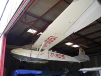
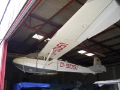
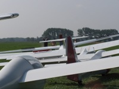
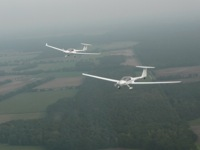

Interessieren Sie sich für den Luftsport?
 Der Luftsportverein Kreis Lüchow – Dannenberg vereint zwei Aufgaben. Einerseits bieten wir Flugsportbegeisterten bei uns die Möglichkeit, fast alle Sportarten, die es in der Fliegerei gibt, auszuüben bzw. zu erlernen. Im Rahmen der Vereinsarbeit bieten wir die Ausbildung zum Piloten für die Sparten Segelflug (SPL bzw. LAPL(S)) und Motorflug (PPL-A bzw. LAPL(A) Teil-FCL) an. Andererseits sind wir als derzeitiger Betreiber des Verkehrslandeplatzes Lüchow-Rehbeck für die Aufrechterhaltung des Flugbetriebes incl. aller Betriebsanlagen verantwortlich.

Machen auch Sie einmal einen Rundflug mit einem unserer Segelflugzeuge oder erlernen sie gleich die Grundfertigkeiten des Fliegens in unserem 2-wöchigen Segelfluglager. - Flugbegeisterte bleiben meistens bei uns und lassen sich anschließend zum Piloten ausbilden.
Der Luftsportverein Kreis Lüchow – Dannenberg vereint zwei Aufgaben. Einerseits bieten wir Flugsportbegeisterten bei uns die Möglichkeit, fast alle Sportarten, die es in der Fliegerei gibt, auszuüben bzw. zu erlernen. Im Rahmen der Vereinsarbeit bieten wir die Ausbildung zum Piloten für die Sparten Segelflug (SPL bzw. LAPL(S)) und Motorflug (PPL-A bzw. LAPL(A) Teil-FCL) an. Andererseits sind wir als derzeitiger Betreiber des Verkehrslandeplatzes Lüchow-Rehbeck für die Aufrechterhaltung des Flugbetriebes incl. aller Betriebsanlagen verantwortlich.

Machen auch Sie einmal einen Rundflug mit einem unserer Segelflugzeuge oder erlernen sie gleich die Grundfertigkeiten des Fliegens in unserem 2-wöchigen Segelfluglager. - Flugbegeisterte bleiben meistens bei uns und lassen sich anschließend zum Piloten ausbilden.
{kind=link}

Wer am Platz bleibt, wird irgendwann auch in unserer Motorflugsparte tätig, welche ein 4-sitziges Motorflugzeug und einen 2-sitzigen Motorsegler unterhält. Diese Maschinen können weite Distanzen überwinden und zeichnen sich durch ihre sehr starken Motoren und Ihre hohe Reisegeschwindigkeiten aus.

Eine Ultraleichtsparte ist ebenfalls am Platz vertreten - diese Maschinen sind alle Privateigentum, wie auch einige Flugzeuge anderer Sparten.
Weitere Möglichkeiten, sich fliegerisch zu betätigen, ohne selbst mit einem Fluggerät in die Lüfte zu steigen, ergeben sich bei unseren Modellfliegern. Für viele Jugendliche und Tüftler die ideale Gelegenheit, technische Zusammenhänge und theoretische Grundlagen zu vereinen und Ihren Startschuss in die Fliegerei zu setzen. Alle Flugmodelle sind ausschließlich Privateigentum.
{kind=link}
{kind=link}
Tag der offenen Tür am 23.06.2019.

Informationen, Flugbetrieb & Flugausbildung
LSV Lüchow-Dannenberg e.V.
Postfach 1213
29439 Lüchow
Tel • +49 (0)5841-2388
Mail • info@lsv-luechow.de
ICAO • EDHC
Callsign / Tower • Lüchow Info @ 125.365 MHz
Elevation • 50 ft / 15 m
Coordinates • N 53 00.91 E 11 08.65